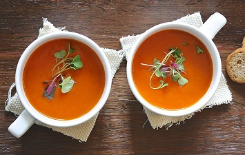

Tomato Soup
Probably the easiest soup in the world and my grandma's favourite one, so it's very special to me! She always uses her homemade tomato sauce which is so thick that it is hard to stir. Of course, nothing can beat that, but I found a brand which reaches at least a similar level. It is the Lidl shop's own Italian style brand called "Italiamo". I would definitely recommend that sauce for this soup.
What I used:
- 2 ts olive oil
- 1 small red onion
- 1 bottle of Italiamo tomato sauce
- 2 gloves of garlic
- salt, pepper
- water
How to make it:
Place a pot over medium heat and add the olive oil. Peel the red onion and cut it into small cubes. Add the onion to the oil and cook it until it's soft. This shouldn't be more than a few minutes. After that add the tomato sauce, the garlic (cut into small pieces or grated), season with salt and pepper and add some water (depending on how you like the soup - I usually use the tomato sauce's bottle for that, after pouring the sauce into the pot, I wash it up with water, about half of the bottle and add it to the soup).
Now that all the ingredients are in the pot, cook it for 20-30 minutes and the soup is ready.
Check the previous week's Goulash Soup